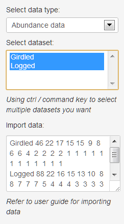
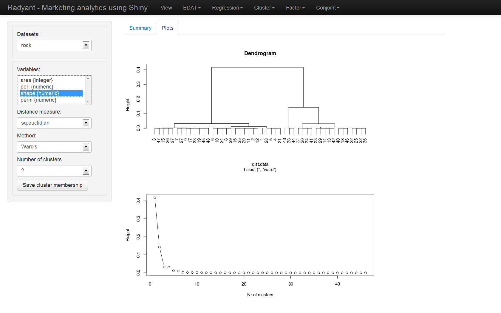

R 講題分享 – 利用 R 和 Shiny 製作網頁應用 (作者：Taiwan R User Group)
簡介Shiny
大家好，這篇文章要跟大家分享的是Rstudio這間公司在2012年釋出的R 套件: Shiny。
Shiny的設計目標，是希望讓不懂網頁技術的R使用者，可以用最短的時間，將他們的分析結果呈現在網站上和使用者互動。而且，透過Shiny，開發者只需要懂R的語法，就可以寫網頁了！（報告學長，完全不用學HTML，完全不用學javascript）
推出至今，在R社群內獲得廣大的迴響。在這篇文章中，我們將介紹近期最火紅的R套件: Shiny，並希望讀者能在閱讀後，獲得使用Shiny來建立網頁應用的能力，以更多元的方式呈現分析結果。
Hello Shiny
使用的第一步，當然是先到CRAN下載Shiny來安裝，並且試著執行範例(請一定要在本機上執行，在遠端伺服器上執行會出錯):
library(shiny)
runExample("01_hello")執行後會自動打開預設瀏覽器，並看到如圖一顯示的網頁。讀者可以試著拉拉看左上角的拉條(slide bar)來調整數量，右邊的圖片會隨著更新！這就是Shiny所強調的互動式網頁應用。
圖一
Shiny也提供網頁模版供開發者使用。圖一中使用的模版pageWithSidebar，將網頁切割為以下三個部份： - 標題，也就是 Hello Shiny! - 控制面板(輸入)，左上角的灰色區塊 - 顯示面板(輸出)，右半邊的圖片
runExample("01_hello")的效果等同於在目錄下建立以下兩個檔案:
ui.R:
library(shiny)
# Define UI for application that plots random distributions
shinyUI(pageWithSidebar(
# Application title
headerPanel("Hello Shiny!"),
# Sidebar with a slider input for number of observations
sidebarPanel(
sliderInput("obs",
"Number of observations:",
min = 1,
max = 1000,
value = 500)
),
# Show a plot of the generated distribution
mainPanel(
plotOutput("distPlot")
)
))server.R:
library(shiny)
# Define server logic required to generate and plot a random distribution
shinyServer(function(input, output) {
# Expression that generates a plot of the distribution. The expression is
# wrapped in a call to renderPlot to indicate that:
#
# 1) It is 'reactive' and therefore should be automatically re-executed
# when inputs change 2) Its output type is a plot
output$distPlot <- renderPlot({
# generate an rnorm distribution and plot it
dist <- rnorm(input$obs)
hist(dist)
})
})接著再執行:
runApp()以下本文將以「Hello Shiny!」為例介紹Shiny的架構。
Shiny的架構
所有Shiny的網頁應用，都可以切割成兩個部份：
- 使用者在瀏覽器看到的網頁，這部份的程式碼放在ui.R。實際上網頁的呈現，以及互動式的效果，都是由瀏覽器所執行。
- 背景執行的R，這部份的程式碼放在server.R。這裡的R 是由開發者於佈署網頁應用時就啟動的，並靜靜地等待瀏覽器傳送參數。
瀏覽器和R 之間，則是透過網路來溝通。

圖二
當使用者打開瀏覽器，連接到Shiny應用程式時，R 會依照ui.R中的程式碼，產生出使用者看到的網頁內容，並在瀏覽器中顯示。
使用者在控制面板更改參數之後，瀏覽器就會將新的參數傳遞給背景執行的R，也就是server.R 。R 就會依照參數和server.R中的程式碼， 產生對應的物件。這物件可能是圖片、報表，甚至是其他的網頁元件。最後server.R會將物件回傳到瀏覽器，以ui.R定義的方式呈現給使用者。 這就是互動式網頁背後的原理。
ui.R
當使用者打開網頁之後，R 會將shinyUI的參數轉換成瀏覽器中的網頁元件。shinyUI的參數都對應到一個網頁元件，而這些物件的參數又分別對應到元件中的元件，形成一種巢狀結構。
第一個元件: pageWithSidebar提供了預設的模版，裏面包含三個參數:
str(pageWithSidebar)## function (headerPanel, sidebarPanel, mainPanel)headerPanel對應到上圖中標題部份的網頁元件，也就是 Hello Shiny!sidebarPanel對應著控制面板(輸入)部份的網頁元件，也就是左上角的灰色區塊mainPanel對應著顯示面板(輸出)部份的網頁元件，也就是右半邊的圖片
這裡的headerPanel是比較簡單的，我們只要把要當標題的字串物件傳入，就可以設定網頁的標題了。
sidebarPenl和mainPanel中則可以再放入其他的網頁元件。
sidebarPanel
str(sidebarPanel)## function (...)sidebarPanel函數接受任意數量的參數，而每一個參數就是顯示在網頁上控制面板的元件。
Shiny提供了幾乎所有基本的網頁輸入(Input)元件。上圖中使用的sliderInput元件，是供使用者透過拉條(slide bar)來輸入數值參數。
str(sliderInput)## function (inputId, label, min, max, value, step = NULL, round = FALSE,
## format = "#,##0.#####", locale = "us", ticks = TRUE, animate = FALSE)inputId非常重要，是瀏覽器和server.R溝通的依據。請讀者先記得，上圖範例中的sliderInput元件的inputId叫作"obs"，之後會在server.R中看到對應的input$obs。
其他的參數，則會依據不同的輸入元件而有不同的意義。請讀者再參閱Shiny的說明文件，在此就不一一解釋。
mainPanel
str(mainPanel)## function (...)mainPanel函數也接受任意數量的參數，而每一個參數就是在網頁上顯示面板的元件。
Shiny也提供數種不同的輸出元件，從基本的文字輸出，到圖、表、HTML元件和javascript。圖一中的plotOutput就是輸出圖片的元件。
str(plotOutput)## function (outputId, width = "100%", height = "400px")這裡的outputId非常重要，也是瀏覽器和server.R溝通的依據。請讀者先記得，上圖範例中的plotOutput元件的outputId叫作"distPlot"。之後會在server.R中看到對應的output$distPlot。
server.R
server.R定義了背景執行的R 如何處理瀏覽器傳遞來的參數，以及如何產生對應的R 物件。為了建立互動式的效果，server.R和一般R 的程式是不同的。
server.R 是一種依照事件驅動(event driven)的架構來執行的程式。當開發者在伺服器上啟動Shiny時，R會先執行shinyServer之前的程式碼，再進入等待狀態。
事件驅動(event driven)
shinyServer中的程式碼，會等使用者打開網頁，並待瀏覽器傳送參數給R 之後，R才會依照reactive或是renderXXX等函數中定義的方式來處理這些參數，並且產生對應的物件。R 會再回傳給瀏覽器，並依照ui.R所定義的方式呈現。R 會再回到等待狀態，直到收到下一組參數。
收到參數，就是一個「事件」，而所有的動作都是在收到事件後才會發生的。所以程式碼的執行是沒有一定的順序。這就是「事件驅動」架構的原理。
shinyServer
str(shinyServer)## function (func)shinyServer只有一個函數參數: func。它的長相必須是:
function(input, output) { ... }input代表ui.R送給server.R的物件；output代表server.R送給ui.R的物件。
Shiny幫開發者處理input和output的傳遞，所以開發者只需要專注於設計ui.R呈現的功能，和server.R處理參數以及產生回應的功能即可。
訊息的傳遞
func的參數input就是將ui.R傳遞回來的參數打包好的R物件，開發者只要透過input$obs就可以讀取使用者於控制面板中，inputId為"obs"的元件內的參數。
func的參數output則是會被送回給ui.R的物件。而output$distPlot這個物件，則會由outputId為"distPlot"的網頁元件來處理。
生成回傳物件(應用的核心)
開發者利用如
output$distPlot <- renderPlot({...})的方式定義產生回傳物件的動作。以Hello Shiny!為例:
output$distPlot <- renderPlot({
dist <- rnorm(input$obs)
hist(dist)
})當偵測到input$obs改變之後，server.R就會依照input$obs的值重新繪製長條圖，再將圖片透過renderPlot函數，傳遞給瀏覽器。瀏覽器再透過ui.R中的定義，使用outputId為"distPlot"的網頁元件呈現給使用者。在Hello Shiny!的例子中，就是plotOutput("distPlot")所對應的網頁元件，也就是使用者在圖一右半邊看到的長條圖。
繪圖的功能置於renderPlot({...})是重要的，因為這樣才會在事件發生(接收到ui.R的參數)後，重新執行繪圖功能，並更新網頁上的圖。Shiny互動式的功能就是透過這個機制達成的。開發者必須要分清楚哪些程式碼是靜態的，只需要執行一次(例如固定資料的匯入)，哪些程式碼是動態的，必須要放入reactive或renderXXX之間。
細解Hello Shiny
對於整個Shiny的架構有初步的理解之後，我們再仔細的講解Shiny處理runExample("01_hello")的流程。
- 執行
shinyUI之前的程式碼 - 將頁面區隔為三大區塊:
headerPanel、sidebarPanel和mainPanel - 依照各Panel的參數顯示網頁元件，這時候
mainPanel中的plotOutput("distPlot")還沒有物件可以呈獻。 sidebarPanel中的sliderInput傳送預設參數給server.R- 啟動server.R，執行
shinyServer之前的程式碼 執行
renderPlot({...})之間的程式碼，也就是:
依照dist <- rnorm(input$obs) hist(dist)sliderInput設定的參數，產生常態分佈的樣本，並且繪製長條圖(histogram)。- 將產生的長條圖放入
output$distPlot之中，回傳到瀏覽器 瀏覽器將
output$distPlot的物件呈現於plotOutput("distPlot")之中
若使用者於瀏覽器更動sliderInput，那整個網頁應用就會從步驟4再跑一次，以實現互動式的效果。
網頁元件範例
Shiny 中已經提供了各種基礎網頁元件。還有一個叫 shinyExt 的R 套件提供更多的元件。
本篇文章限於篇幅，無法一一講解，這部份只能請讀者依照自己的需求再去閱讀Shiny的套件說明。
輸入元件範例
- 


輸出元件範例


Shiny網頁應用範例
使用者可以到 http://www.rstudio.com/shiny/showcase/ 觀看其他開發者所開發的 Shiny 網頁應用。
如:


- 

開發建議
讀者如果想試著開發Shiny應用，我們有以下的tips供讀者參考:
- 先從 http://rstudio.github.io/shiny/tutorial/ 中找到符合需求的模版
- 把其他套件的載入，或資料源的設定，放置於
shinyUI和shinyServer之前，如資料庫連線設定 - 先從ui.R開始建立使用者介面
- 網頁沒有回應，通常是ui.R有語法錯誤，
runApp下方應該有錯誤訊息 - 在server.R中插入程式的核心演算法、分析方法。請務必理解server.R的架構，並且將功能正確的分為靜態的部份和動態的部份，才能將程式碼放置在正確的位置。靜態的部份放置於
shinyServer之前，動態的部份會放在reactive，或對應的renderXXX裡 - 網頁有出現，但是
mainPanel出現紅色錯誤訊息，代表server.R有錯誤 - 在server.R中插入
browser()後，在runApp之後可以在執行相關事件時暫停在browser，開發者可以很方便的進行除錯
讀者如果對於基本的Shiny功能不滿意，可以在學習HTML/CSS/javascript後擴充Shiny網頁應用的功能。
佈署網頁應用
通常開發者撰寫出來的Shiny網頁應用可以依照以下方法來讓其他使用者使用:
直接傳遞相關檔案
開發者可以將撰寫好程式e-mail給使用者。
當使用者拿到相關檔案之後，仍需要有安裝R和Shiny，利用runApp來使用。
利用Github
開發者可以將撰寫好的ui.R和server.R放到github或gist。使用者仍需安裝R和Shiny，再利用runGist或runGithub來使用。
Rstudio的Shiny伺服器
開發者可以到 https://rstudio.wufoo.com/forms/shiny-server-beta-program/ 註冊，之後將撰寫好的ui.R和server.R上傳到Rstudio伺服器上。
使用者不需要安裝R，只需要打開瀏覽器後，連上相關網址就可以使用。
自行架設Shiny伺服器
請依照 https://github.com/rstudio/shiny-server 的說明建制Shiny伺服器。目前僅提供Linux版本。
建制完成後，使用者不需要安裝R，只需要打開瀏覽器，連上相關網址就可以使用。
參考資料
- Rstudio-Shiny 官方網站 http://www.rstudio.com/shiny/
作者
- T.C. Hsieh ()
- 清華統計所博士(2009-2013)，致力於發展沒人懂的統計方法與開發沒人用的統計軟體
- R 相關著作：
- R套件，CARE1主要作者
- Shiny應用，iNEXT-Online
- 研究領域：Statistics, ecology and genetics
- Wush Wu ()
- Taiwan R User Group Organizer
- R 相關著作：
- 研究領域：Large Scale Learning，Text Mining和Uncertain Time Series